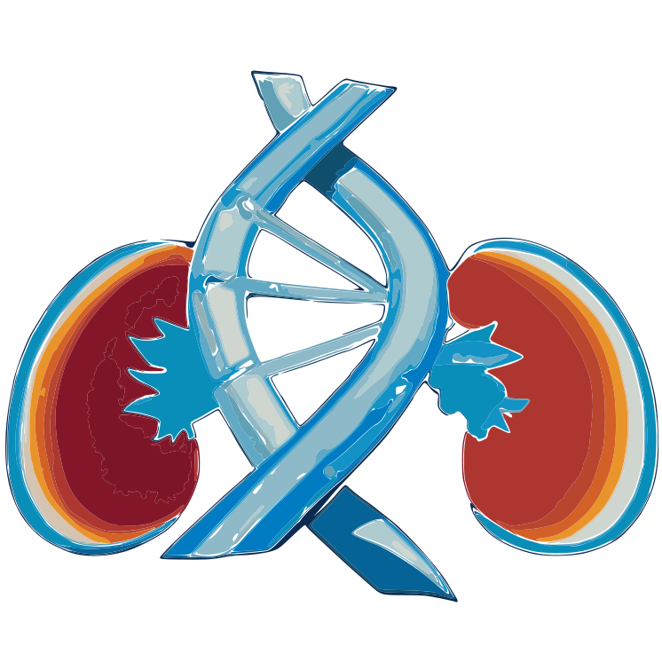

The Kidney-Genetics Documentation
2024-05-14
Preface
This documentation is intended to describe the Kidney-Genetics project.

Objective
How can we address the lack of a unified and standardized database of kidney disease-associated genes, which hampers diagnosis, treatment, and research comparability in the field of kidney diseases?
Genetic insights are becoming increasingly influential in the understanding and treatment of various kidney diseases (KD). Hundreds of genes associated with monogenic kidney disease have been identified, providing valuable insights into their diagnosis, management, and monitoring. However, the lack of a unified and standardized database of genes assigned to kidney diseases has led to diagnostic blind spots and comparability issues among current studies of kidney genetics. To address this gap, we created the “Kidney-Genetics” a regularly updated, automated and publicly accessible database which aims to provide a comprehensive list of all relevant genes associated with kidney disease.
Key issues:
- Create a unified and standardized database of kidney disease-associated genes and provide a valuable resource for the diagnosis, treatment, and monitoring of those diseases
- Allow clinicians and researchers to gain a deeper understanding of the genetic factors underlying different KDs
- Compile, organize and curate important information on the genes to the identify novel candidate genes and genetic variants associated with KDs
- Group and sort the genes into different categories, for example into phenotypic groups, the onset, syndromic, etc.
- Establish genotype-phenotype correlations that can be used to assign multiple clinical entities to a single gene in order to improve understanding and treatment choices
- The information can be used to develop personalized treatment strategies and interventions, leading to more effective and targeted therapies for individuals with KD
- Researchers can freely access “Kidney-Genetics” ensuring consistency and comparability across different research projects, which can accelerate scientific progress, foster collaborations, and facilitate the development of new insights and approaches
The scientific literature highlights the need for such a database and emphasizes the importance of genetic research in kidney disease (e.g. (Boulogne et al., 2023)).
In summary, our research question and its approach have the potential to provide a deeper scientific understanding of KD genetics, improve diagnostic accuracy, guide treatment selection, advance precision medicine, and facilitate research collaboration. The establishment of the “Kidney-Genetics” database addresses an important gap in the field and provides a valuable resource for researchers, clinicians, and patients involved in the discovery and treatment of KD.
Methods
To create a thorough and standardized database of kidney-related genes, we employed the following methods and compiled kidney disease-associated gene information from various sources:
- Utilized data from Genomics England and Australia PanelApp (Martin et al., 2019)
- Conducted a comprehensive literature review of published gene lists
- Collected information from clinical diagnostic panels for kidney disease
- Performed a Human Phenotype Ontology (HPO)-based (Köhler et al., 2021)) search in rare disease databases (OMIM)
- Employed a PubTator (Wei et al., 2013) API-based automated literature extraction from PubMed
We also developed an evidence-scoring system to differentiate highly confirmed disease genes from candidate genes. We defined the presence of a certain gene in 3 or more of the 5 resources as highly evident genes.
These genes were then manually curated according to predetermined criteria or, in the case of existing ClinGen curation, their data and scores were used. Genes with a score of 2 or less were accordingly more likely to be classified as candidate genes.
Furthermore, we grouped all genes into different categories to later match them in a genotype-phenotype correlation.
To get a more transparent and thus more comprehensive understanding of our several evidence source “pillars”, we listed our different steps below and attached a flowchart for better visualization.
We retrieved all kidney disease related panels from both PanelApp UK and PanelApp Australia, meaning all panels that include “renal” or “kidney” in its name. That included xxx different lists. The access date was the xxx.
We identified Genes associated with kidney disease in a systematic Literature search using the following search query:
(1) “Kidney”[Mesh] OR “Kidney Diseases”[Mesh] OR kidney OR renal AND
(2) “Genetic Structures”[Mesh] OR “Genes”[Mesh] OR genetic test OR gene panel OR gene panels OR multigene panel OR targeted panel*
we then screened for published lists and got xxx lists from date to date xxx.- (Bleyer et al., 2022)
- (Knoers et al., 2022)
- (Alaamery et al., 2022)
- (KDIGO Conference Participants, 2022)
- (Tanudisastro et al., 2021)
- (Devarajan et al., 2022)
- (Rasouly et al., 2019)
- (Elhassan et al., 2022)
- (Cormican et al., 2019)
- (Murray et al., 2020)
- (Claus et al., 2022)
- (Bullich et al., 2018)
- (Ottlewski et al., 2019)
- (Al-Hamed et al., 2016)
- (Domingo-Gallego et al., 2022)
- (Jordan et al., 2022)
We used ten common diagnostic panels that can be purchased for genome analysis and extracted the screened genes from them. Those included following panels:
- Centogene nephrology
- Cegat kidney diseases
- Preventiongenetics comprehensive inherited kidney diseases panel
- Invitae progressive renal disease panel
- Invitae expanded renal disease panel
- Mgz nephrologie
- Mvz nierenerkrankungen
- Natera renasight comprehensive kidney gene panel
- Mayocliniclabs renal genetics
- Blueprintgenetics nephrology
We used common databases (e.g. OMIM) for rare diseases and screened them for kidney disease associated Genes from a Human Phenotype Ontology (HPO) based search query. The most comprehensive HPO term used was “Abnormality of the upper urinary tract” (HP:0010935) and included all subgroup terms. We deliberately chose these to be somewhat broader in order to fully include all relevant kidney diseases such as CAKUT, among others.
We retrieved all kidney disease associated genes from a PubTator API-based automated literature extraction of publications available on PubMed.
Kidney-Genetics Flowchart
(#fig:curation_flow_diagram)Curation process flow diagram
Results
The “Kidney-Genetics” database currently contains detailed information on 3025 kidney-associated genes with detailed annotations on gene function, kidney phenotype, incidence, possible syndromic disease expression and genetic variation. To automatically group the genes, we will present the results of phenotypic and functional clustering.
The number of genes extracted from the five analyzed sources of information is as follows: (1) 534, (2) 822, (3) 956, (4) 789, and (5) 2158
Notably, 598 genes (19.8%) of the total 3025 genes are present in three or more of the analyzed information sources, thus meeting our evidence criteria, indicating high confidence and their potential for diagnostic use.
Of these high evidence genes, 526 (88.0%) are present in at least one, and 56 (9.4%) are present in all 10 comprehensive diagnostic laboratory panels.
To ensure currency, Kidney-Genetics will be updated regularly and automatically at XXX week intervals. We will also provide phenotypic and functional clustering results to facilitate gene grouping.
Conclusion
Kidney-Genetics is a comprehensive, free and publicly accessible database that can be used by researchers to analyze genomic data related to KDs. The database will be routinely updated using an automated system and standardized pipeline to ensure that it is always up-to-date with the latest kidney research and diagnostics.
By utilizing Kidney-Genetics, clinicians, geneticists, and researchers can examine genomic data and improve their understanding of the genetic components of diverse KDs. The code and results are completely available on GitHub. A standardized pipeline and automated system keep our database on the cutting edge of kidney research and diagnostics. Screening efforts toward manual curation (such as through the ClinGen initiative) and assignment of diagnostic genes to nephrologic disease groups (e.g., syndromic vs. isolated; adult vs. pediatric; cystic, nephrotic, etc.) are currently in the development process and our goals for the near future.
Outlook
Future goals include the further manual curation of the high evident genes to acquire a more accurate individual assessment of each gene. For this purpose, we have developed a standardized curation process based on the ClinGen criteria, as previously discussed in the methods section. Furthermore, diagnostic genes will be assigned to certain defined nephrological disease groups, in order to obtain a phenotype-genotype correlation and gain a better clinical understanding.